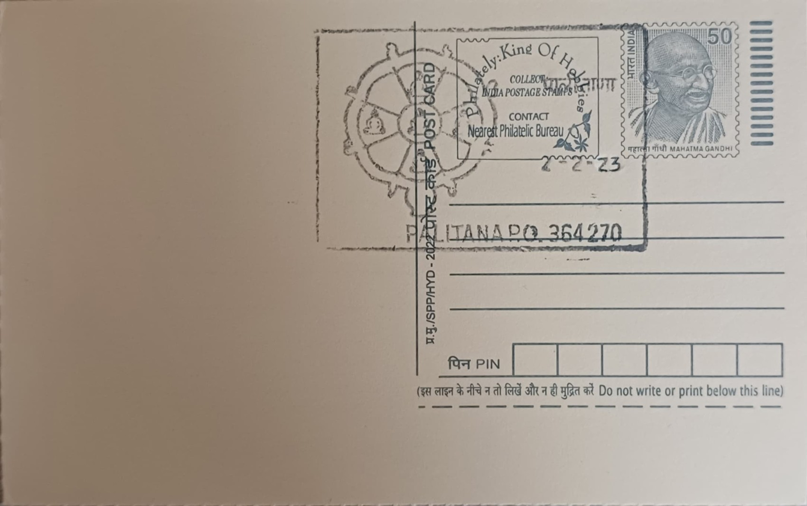

Siddha Chakra
સિદ્ધ ચક્ર


Siddha Chakra, also known in the Shvetambara tradition as Navapada ("nine limbs" or "nine petals") and among Digambaras as Navadevta ("nine deities"), is a yantra, or sacred geometric diagram, central to Jain devotional worship. The name draws together siddha, a liberated soul freed from the cycle of rebirth, and chakra, a wheel, expressing the belief that veneration of the diagram helps the devotee turn toward moksha, final liberation from worldly bondage. Unlike a historical monument with a single founder or foundation date, the Siddha Chakra's form has developed over centuries of Jain ritual and iconographic tradition, and it is understood less as an invented image than as a codified representation of the path every soul must travel toward spiritual perfection.
At the diagram's core sit the Panch Parmeshthi, the five supreme beings of Jain cosmology: the Arihant (one who has conquered inner passions), the Siddha (the fully liberated soul), the Acharya (preceptor), the Upadhyaya (teacher-monk), and the Sadhu (ordinary monk). Around this quintet are arranged four further pada representing Samyak Darshan (right faith), Samyak Gyan (right knowledge), Samyak Charitra (right conduct), and Tap (austerity or penance), together completing the nine elements from which the yantra takes its name. Jains regard devotion to these nine as the most direct route to liberation, and the Siddha Chakra is consequently treated not merely as decorative symbolism but as a functioning object of worship, installed on temple altars and reproduced on ritual implements, manuscripts, and architectural ornamentation across Shvetambara Jain communities.
The diagram's principal ritual context is the Navpad Oli, also called Ayambil Oli or Shashwati Oli, a nine-day observance held twice yearly in the Jain lunar months of Chaitra and Ashvin (roughly March-April and September-October). Over the nine days, practitioners undertake the Ayambil fast, consuming a single simple, unspiced meal daily, and offer worship to each of the nine pada of the Siddha Chakra in turn, typically through elaborate pujas that include ritual bathing, application of sandalwood paste, and recitation of specific mantras tied to each element. Because the Oli is held to recur in every cycle of cosmic time, Jain tradition describes it as the one festival common to all eras, which lends the accompanying worship of the Siddha Chakra a standing among the most widely observed devotional cycles in the Shvetambara calendar.
Bhavnagar district, and the Palitana sub-region in particular, gives this symbolism an unusually concentrated physical setting: the nearby Shatrunjaya hill complex above Palitana town carries close to a thousand Jain temples built chiefly from the eleventh century onward under patrons such as the Chaulukya-era minister Vastupal and later the ruler Kumarpal, and is revered as the site where numerous Tirthankaras, including Rishabhanatha, are believed to have attained liberation. Siddha Chakra pujas and Oli observances performed in Palitana's temples draw directly on this landscape's association with moksha, since the yantra's own subject, the liberated soul, is held to have been realized on these very hills by generations of ascetics, making the symbol's veneration here more than an abstract act of faith.
Today, the Siddha Chakra Mahapuja remains a recurring feature of the ritual calendar at Palitana's temple trusts, which, under the administration of bodies such as the Shri Shatrunjaya Jain Tirth Pedhi, organise community Ayambil halls and Oli gatherings that draw pilgrims from across Gujarat and beyond during the two annual observance periods. Its appearance on a postal cancellation tied to Palitana SR SO reflects this working devotional practice rather than a dormant historical reference, marking a symbol that pilgrims continue to engage with twice each year through fasting, structured puja, and communal worship at one of Shvetambara Jainism's most visited pilgrimage centres.
| Date of Introduction | July 3, 1992 |
|---|---|
| Address | Sub Postmaster, |
| Palitana SR SO, | |
| Bhavnagar (dt.), Gujarat - 364270. |